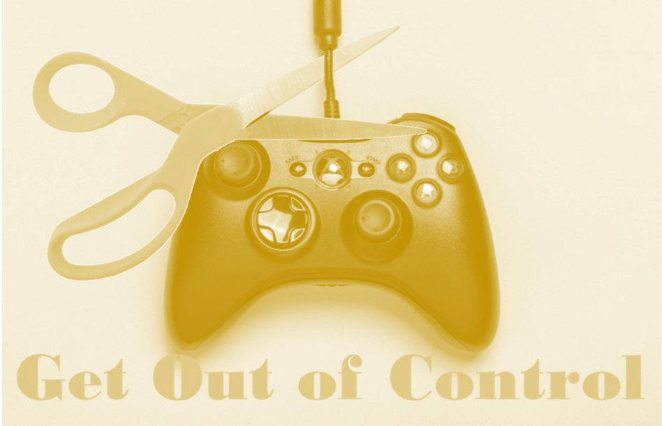
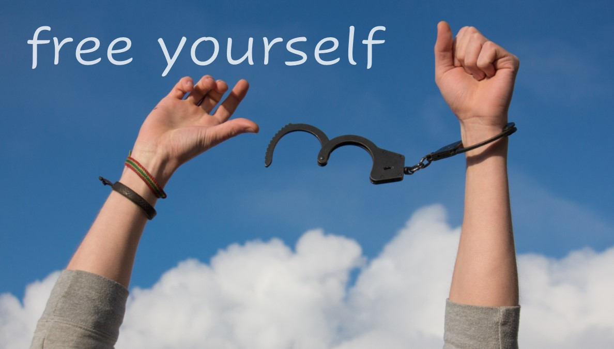

Coronavirus and Our Need for Control
By Hershy Kirsh - April 2, 2020As the spread of the Coronavirus started to widen and affect people’s day to day lives, I noticed a trend, albeit a predictable one. Many people used the situation to re-enforce their prior beliefs. For people which God, or any form of supernal authority, is a central part of their beliefs, the narrative was something along the lines of “God is doing this because of… and we need to do…” all based on the rest of their beliefs. For others, that protecting the planet is central to their ideology, they would see it as the universe or nature bringing about a break in the constant pollution of the atmosphere. Yet for others, those with a tendency to conspire, they would have a theory that confirms their underlying beliefs. And if their political beliefs are front and center of their perspective, they found this to be a political event. And the list goes on.
This approach to events is, of course, not limited to events with great magnitude. The same attitude is applied to every day trivial occurrences as well.
There is another, seemingly unrelated, phenomenon that manifested, which many considered natural to humans. This is the longing for everything to revert to “normal”. People feel we just want to get passed this and move on with life as it always was. This is a common emotion even for those who, admittedly, find usual life to be a struggle and difficult. In essence, what’s being expressed is: “Just give me back the troubles that are familiar to me and take away the stuff that’s foreign to me, be it good or bad”. It’s an aversion to change.
Perhaps we can take a moment to see the source of these ideas and we may then realize that they both stem from the same origin. And while we’re at it, maybe we can get insight into what is it we truly want and what is truly natural for humans.
What I see as the underlying source of the above trends, is the need to feel in control of events around us. On a usual day one might feel as though today will be just like yesterday, and therefore, I have this under control. However, when things are clearly not usual, one feels that they are not in control. If we took an honest look at what we consider a usual or normal day, we would see that no day is truly like the day before and we also have very little control about what will occur at any moment. We would see that the sense of control is an illusion created by the mind. Think of how many times a day you feel frustrated or annoyed. All frustration and annoyance are the result of and response to a push back on your sense of control. Something happened that made an audacious display of your lack of control.
Somehow, this idea of control being a necessity got into the human psyche and is causing a lot of hardship and suffering. When analyzed in a sincere manner, it is obvious that there is no logical reason to assume that we can control what should take place around us.
Once this irrational idea got a foot hold in the human psyche, that brought about many other ideas to support the illusion of control. If we can align all events with some prior beliefs, that would help us feel as though this is part of what I know is supposed to happen. Which re-enforces the illusion of control. And if I can find the common aspects between today and yesterday and disregard the, all too many, differences, I can say I knew what this day would hold, and again, feel in control.
I think it’s safe to say that every person ultimately wants some combination of happiness, fulfillment, contentment, peace and serenity. Where we differ, however, is how to fulfill this. But one thing is clear, that the illusion of control can only move us further from this coveted state.
Imagine, however, what would happen if we gave up this idea of control. We would full heartedly accept that what happens around us is out of our control and we would stop expecting things to happen a certain way. Rather, we would wait enthusiastically to let the proceedings around us tell us how it should be. We would now be open to embrace change, especially if we feel things are not great as is. We would no longer feel the need to hold on to the familiar, just to gain an illusory sense of control.
I would suggest that this is a more natural approach. To let reality dictate to us what is and what isn’t, while we observe attentively. To take in everything that is happening and allow it all to be, without construing it with what we believe. Stay present at each moment and recognize how new and different each moment is without trying to make it the same by forcing a mind-made continuity in order to feel in control.
Humanity’s aversion to change is, at least in part, what’s holding back a better tomorrow. On the one-hand we talk about and try to improve reality, while at the same time we hold on to the familiar as if our wellbeing depends on it, thus stifling any progress.
(I was gladdened when I heard others express this idea, that we should hope and pray for a better future and not for things to go back to normal. I think it’s the first time that I heard this being articulated by others. This is something I’ve voiced numerus times and feel passionate about.)
Even in usual times, we need to release the attempt to hold on to the familiar, so that improvement can take place.
In conclusion, let’s identify the areas that are in our control. We can govern our beliefs and perspectives. We can be conscious of whether we let reality be or blanket it with ideas to make it look like something else, something that makes us feel more in control. Additionally, by taking charge of our perspective we also remedy our response to the situations around us, which, as mentioned above, are out of our control.
May we all find it within us to release our attempt for the illusion of control, and fully embrace everything that comes our way. And with that we shall enter a more enlightened time than ever before.